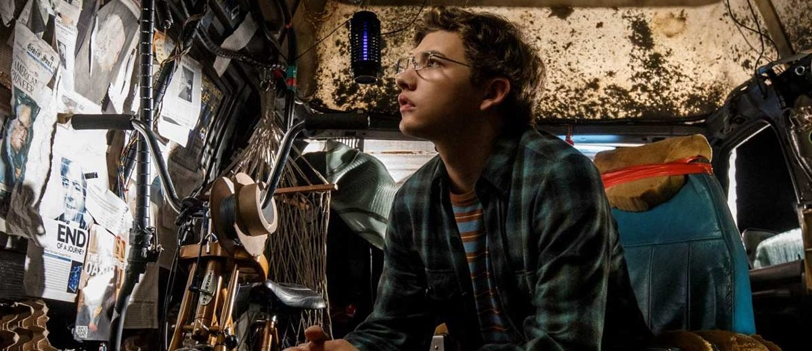
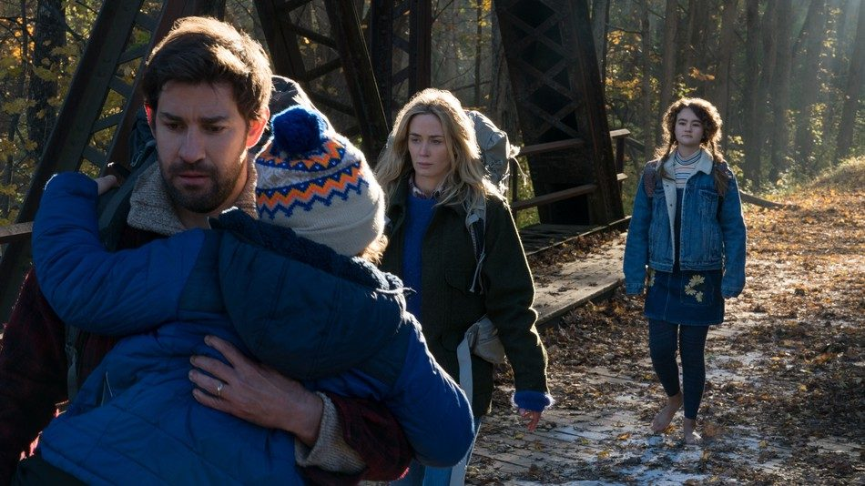
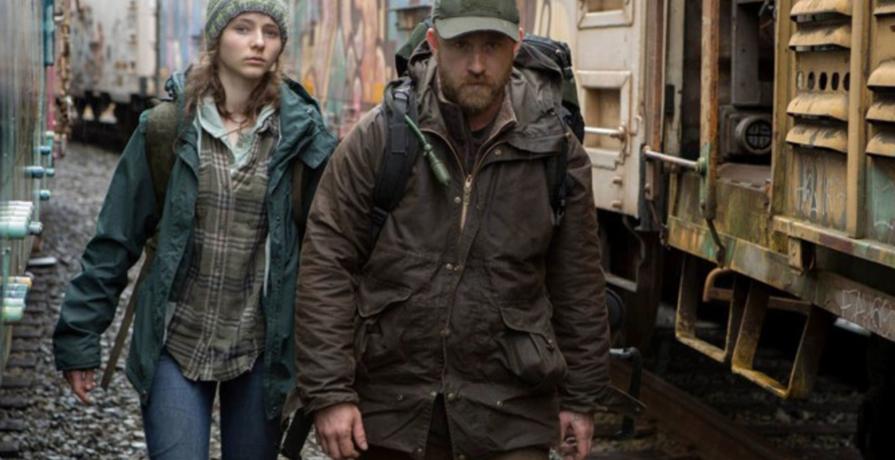
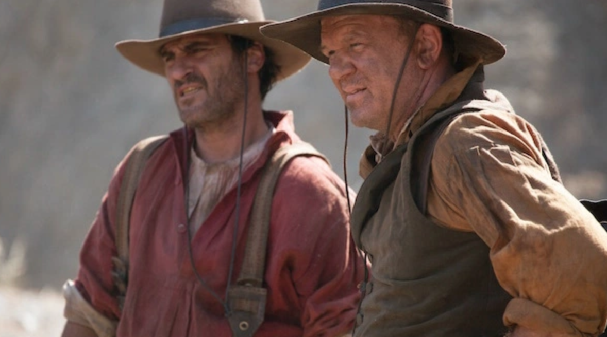
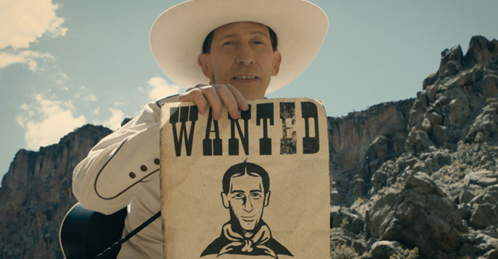

Le top des films 2018
This post was originally written in French.
Et voilà un petit top pour 2018.
Pour rappel: Top 2017, Top 2016, Top 2015, Top 2014, Top 2013, Top 2012, Top 2011, Top 2010, Top 2009, Top en 2008, Top en 2007 , Top en 2004-2005-2006
Les "pas encore vus"
The Florida project, La douleur, Revenge , Phantom Thread, Lady bird, Isle of dogs, The death of Stalin, Au poste , Under the silver lake, First Reformed, Girl, En liberté!, Suspiria, Burning, Capharnaum
Le top 2018

I, Tonya, bande-annonce, ce film est juste génial ... et dire que tout est vrai ;-)

Three Billboards Outside Ebbing, Missouri), bande-annonce

Call Me by Your Name, bande-annonce

Ready Player One, bande-annonce





The Sisters Brothers, bande-annonce

The ballad of Buster Scruggs, bande-annonce
Spider-Man: Into the Spider-Verse, bande-annonce
BlacKkKlansman, bande-annonce
Mentions honorables
Le monde est à toi, bande-annonce
Mission Impossible - Fallout, bande-annonce
The shape of water, bande-annonce